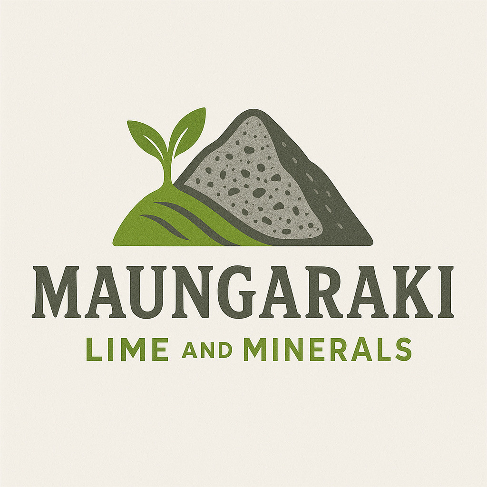
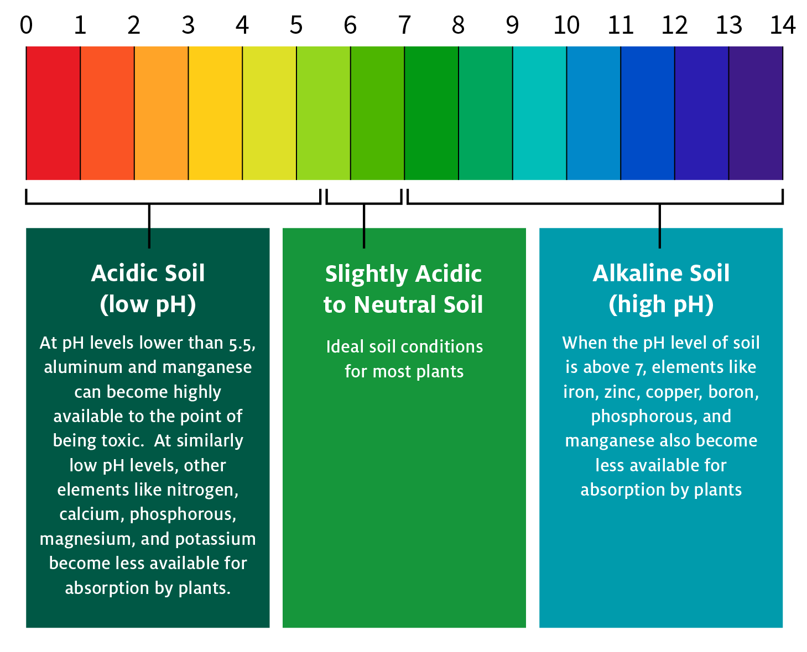

About Maungaraki Lime
Our Mission
At Maungaraki Lime, we're dedicated to helping farmers and gardeners achieve optimal soil health through quality agricultural lime products and education.
What is Agricultural Lime?
Agricultural lime is crushed limestone that's used to reduce soil acidity. It contains calcium carbonate, which neutralizes acidic soil and makes nutrients more available to plants.
Benefits of Lime Treatment
- Raises soil pH to optimal levels
- Improves nutrient availability
- Enhances soil structure
- Increases crop yields
- Reduces aluminum toxicity
- Promotes beneficial soil bacteria
The Science Behind pH
Soil pH measures acidity on a scale of 0-14. Most plants prefer pH 6.0-7.0. Below pH 5.5, essential nutrients like phosphorus become locked up and unavailable to plants.
Contact Information
Maungaraki Lime and Minerals
704 Te Wharau Road, Kourarau Hill
Maungaraki, Masterton 5883
New Zealand
Phone: (27) 257 8758
Email: info@maungarakilime.co.nz